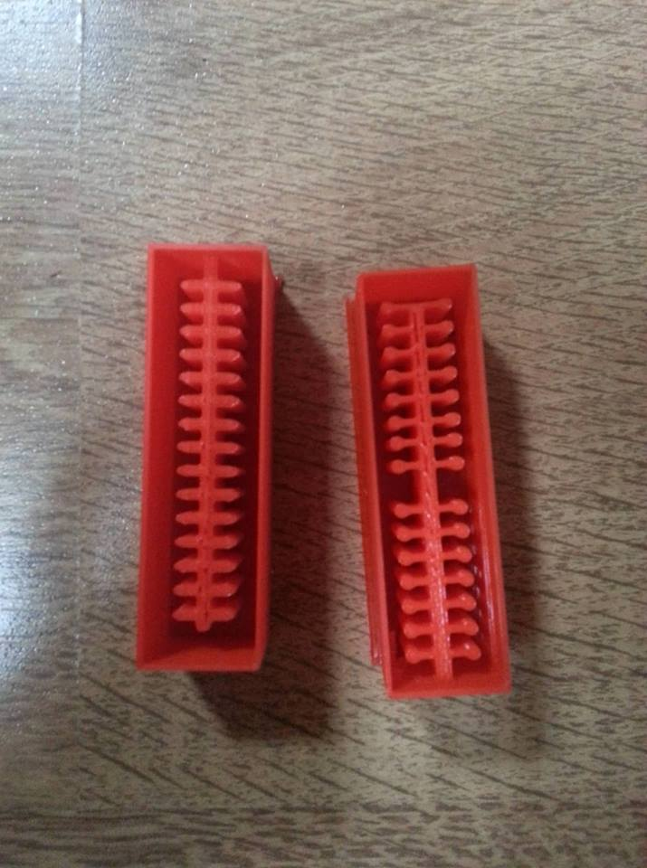

The following photos are supported with a short explanation of the whole process of making this prototype.
You have to make your mold shape on Fusion 360 or any other 3d modeling Software.
In the documentation of
Soft Robotics
you can find a guided explanation of how to 3d print with 0.8 nozzle and the settings
that should be put in Cura.
Enjoy!
When you are ready with your shape then save it as .stl file and open it in Cura
to set all the needed settings for the nozzle you have chosen.
In the documentation of
Soft Robotics
you can find a guided explanation of how to 3d
print with 0.8 nozzle and the settings
that should be put in Cura.
Now let us wait for a while until our shapes are printed.
The first mold was not thought very well through. It is too tiny.
I had 1 mm wall thickness and also 1 mm diameter for the spikes inside.
As you can see on the photo one of them broke very easy. So there was a
need for another stronger mold.
Also developing this concept of an innovative product I had to be very
thoughtfull of its shape and functionability. So, I made a couple of
changes in the new mold.
The wall are now 3 mm thick. The spikes 2 mm (wait for it) and I added those
cross like extensions to work as distance keepers between the jat lid and the
Fermentation hat. The two holes on the bottom and top extension are for easier
operating with the product (puting in and taking out). So, obviously there is again something wrong here.
Ta-daa, of course as I also extended the height of the mold the spikes got thin and long.
Although 2 mm they were absolutely not stable which led to them ripping of after taking
out the rubber cast. And then again I needed to create a new mold and this time make sure
that the spikes are thick! I also thought that there should be a simpler way of keeping the
much needed distance between the hat and the jar lid, so I removed the cross extensions
And added a small whole (check next step).
I also want to mention that I am pritty new to 3d printing and working with Fusion,
so I don#t have this professional feel about it to guess from the beggining that
1 mm wall thickness is definitely to small for a rubber cast, that these 1,5 cm long
and 2 mm thick spikes will be very easy to break. So, I did lose material, which I
hope can be recycled or reused in a way. And I also learned my lesson!
This is the new mold I xreated, 3 mm wall and spikes thickness, several bigger
holes instead of many tiny ones. And I added the hole in the middle which purpose
you will find on the next step. This mold was great! Very stable, printed quickly,
easy to handle.

You can see here the idea of the hole. I thought to put a whole in the middle,
or just a shallow bed for a glass marvel ball which will work as a distance
keeper. I loved this idea as it is very simple and 100% functional.
Another thing that was missing is a face of the product. It looked
clean and slick but it defentely needed a face! So, I decided to put
A logo I did in the middle of the mold.
I had a small problem with 3d printing it because it was thiner than the nozzles
we had available. Basically, the printer just did not print it. Because of
the amount of time left, I decided to stop experimenting and start slowly
building everything together. So, I cut the logo out of a plexiglass and
sticked it to the last mold I had created which is the following -->
It is important to have flexible mind ;)

So, now my mold has a pritty nice face, I also created this small "hook" on
one side to be easy to take it out of the glass. I also created the mold 5 mm
wider than the jar d so it can perfectly stick to the glass. It is 1 cm thick,
the holes are all way through as they are needed for air and water circulation
and the face should stay downwards. On top of it, when the time comes glass
marvel balls can be put. I created 2 cute supplements for that reason.
I 3d sculpted a cabbage and an artichoke heads to function as marvels.
3d sculpting is definitely a process I loved trying out and I would love to
indulge in it more. I used Fusion 360 the 'Create Form' option. It is hard,
and can go very wrong because none of those paralels and meridians should not
overlap, which makes the process very slow and precise, but fore me also satisfying.
I had to print these 2 with supports which at the end I removed.
I worked with Eco-flex 50. Although 50 is the hardest was not as hard as
I needed it. The rubber I wanted to use is ordered but did not come on time.
I tried also with another silicone rubber exactly for the food industry
but it turned out not very nice. So therefore I stuck with ecoflex 50
for the prototype. The next photo is from this gone wrong rubber.

FabLab Kamp-Lintfort, Ms. Adriana Cabrera, Soft Prototyping
‹ ›